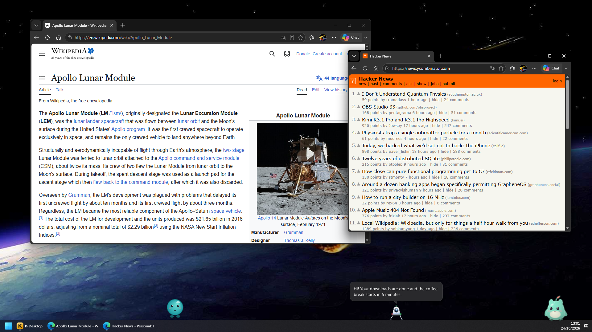
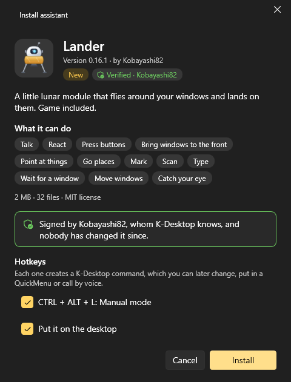
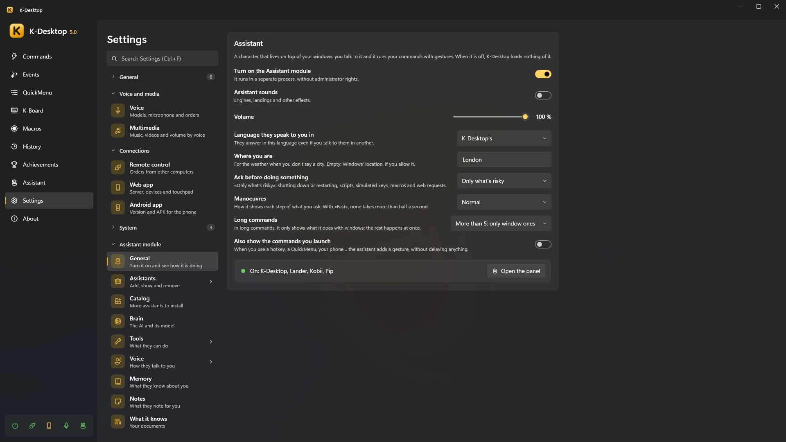
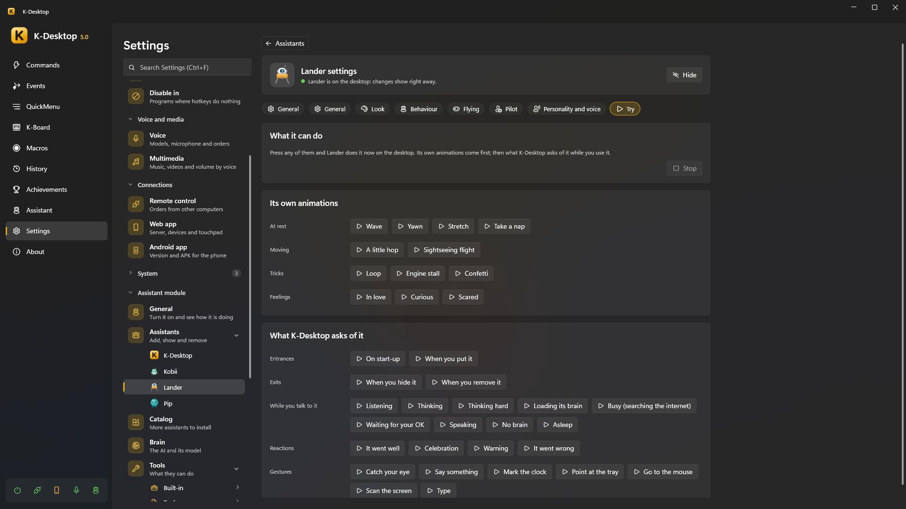
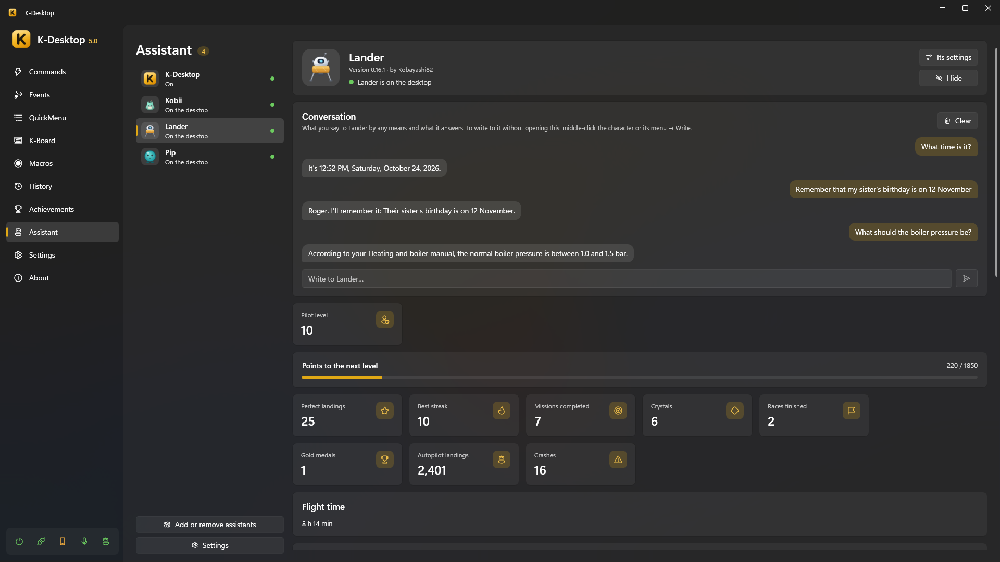

Assistants
An assistant is a character that lives on top of your windows. It walks or flies around, reacts to what happens on the PC, and you can talk to it: «Lander, minimise Chrome», «Kobii, what's the weather tomorrow?». When it runs one of your commands every step can be seen: the Lander flies over and shoots the minimise button, and the window minimises right on impact.

Note
The assistant module is optional. While it is off, K-Desktop loads nothing of it and behaves exactly as without it.
The assistants
| Assistant | What it is |
|---|---|
| Lander | A small lunar module that flies between your windows, lands on them, tows them with a grappling hook, and has its own game (manual mode, missions, races) |
| Kobii | A little creature that walks, climbs your windows, plays, eats, sleeps and lets you pet, brush or high-five it |
| Kumo | A soft cloud that floats about, wraps windows to carry them, rains, makes rainbows and dances to your music |
| K-Desktop | The built-in assistant without a character, for when you want answers without anyone on the desktop |
Several can be on the desktop at the same time; each one has its own wake word, key to talk, language, personality, voice and even its own AI model.
Turning it on and installing one
Settings → Assistant → General → Turn on the assistant module.
Settings → Assistant → Catalog: each assistant with its clips, what it can do and Install…. You can also open a
.kaipackage with a double click, or use Assistants → Add assistant.The install card shows what it is, what it can do and who signed it, and offers to record its name as a wake word, to create commands for its shortcuts and to download the AI model it suggests.

Press Install.
A new version installs over the old one and is swapped in live, keeping the assistant's data
(%APPDATA%\K-Desktop 5\Assistants\Data\<id>, included in backups). Installed assistants tell you when there is a new
version (Settings → Updates): it is always offered, never installed without asking.
Signed packages
The card says who signed a package:
| It shows | Meaning |
|---|---|
| Verified · name | Signed with a key K-Desktop knows (K-Desktop's own assistants) |
| Signed by «name» | Signed with another key: the name is only what the package says, but updates must come with the same key |
| Not signed | No signature: it installs, with the usual warning |
| (not installed) | The signature does not match: something in the package changed after it was signed |
If an update is signed by someone else than the version you have, the card warns in red.
Its card
In Settings → Assistant → Assistants, each assistant has its page:

Put on the desktop / Hide (Activate / Deactivate for K-Desktop).
Basics: its wake word, its key to talk, the model it thinks with (and the one to think harder), and the settings every assistant shares —size, volume, liveliness (how much it moves on its own), and whether it can be picked up with the mouse— plus «Always use K-Desktop's bubble».
Personality: another language and personality for this assistant.
Voice: who speaks (Kokoro, Piper, Windows…) with only that engine's settings, its profile, and its own speed and volume.
Try: the assistant on a small pretend desktop of its own, doing each thing it can show (its animations, entrances and exits, states, reactions, gestures, what it does to a window). Nothing of it touches your desktop.

Below, in another row, its own pages (from its package): the Lander's game options, Kobii's colour…
What is not changed stays Global: what is in Settings → Assistant for all of them.
Panel → Assistant shows each assistant with what it is doing and its model in one line, and two tabs: Conversation (the chat, its Activity —what it did, with undo; Everyone shows everyone's— and the technical details) and …'s panel (scores, achievements, buttons), which shows also when it is not on the desktop.

Talking to it
| How | |
|---|---|
| Its wake word | «Lander, …». Recorded in its card; each assistant has its own |
| Its key to talk | Hold it and speak (each assistant can have one) |
| Long click | Hold the left button on it for half a second and speak |
| Writing | Middle click on it, or Write to … in its right-click menu, opens a box; or the chat in Panel → Assistant |
| Phone | The Assistant tab of the web app, written or spoken |
| Commands | Assistant: ask sends it a text (or opens the box to write); the answer can be said, pasted over the selection, copied, shown on a sheet or kept in {result} |
Its right-click menu has Write to …, its own actions (extras), its panel, its settings and Hide.
Dropping files on it (from the Explorer) opens a small window: «What do I do with "file"?», with suggestions by type (summarise or read a document, describe an image or read its text, summarize an audio or turn it into text, see what is in a folder, open it…) or your own words.
What happens when you ask
- Fixed phrases go first, without AI: «what time is it?», «set a timer for 10 minutes», «remember that…», «open youtube.com», «what's playing?», «weather tomorrow», «free the brain»… They answer in a moment.
- Your commands: if what you said names one of your commands clearly, it runs (with its gestures).
- Otherwise the AI answers, choosing among its tools the ones that fit.
Risky things (closing programs, deleting files, shutting down) ask first with a small window, by voice too («yes» / «no» / «yes, and don't ask again»). Settings → Assistant → General → Ask before doing something sets it: never, only risky things, or the first time.
Gestures and speed
Settings → Assistant → General:
- Manoeuvres: Showy, Normal or Fast (under half a second).
- Animate up to N actions of a command (the rest run without gestures, except window ones).
- Also show the commands you run yourself: commands launched by hotkey, menu or voice are also shown as gestures, as decoration.